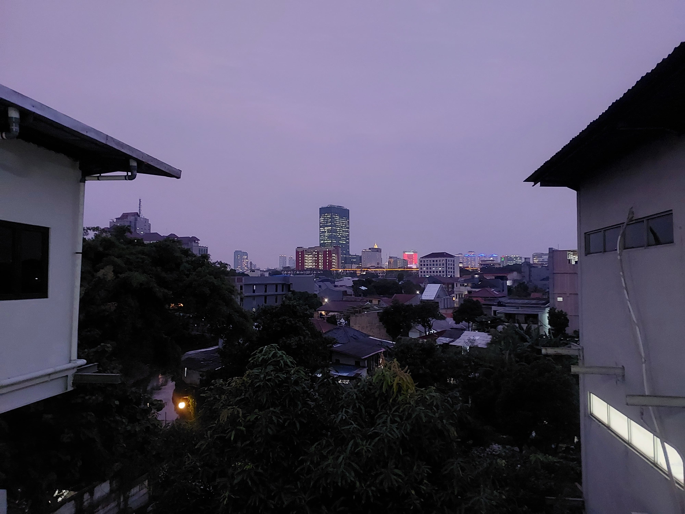

Jakarta Selatan

South Jakarta, or Jakarta Selatan, is one of the five administrative cities of Jakarta, Indonesia. It is known as a modern and developed area with many business districts, shopping centers, restaurants, schools, and residential neighborhoods.
Popular areas include Blok M, Senayan, and Pondok Indah. Jakarta Selatan is also known for its relatively greener neighborhoods compared with other parts of Jakarta. It is an important center for business, entertainment, education, and lifestyle, making it one of the busiest areas in the capital.